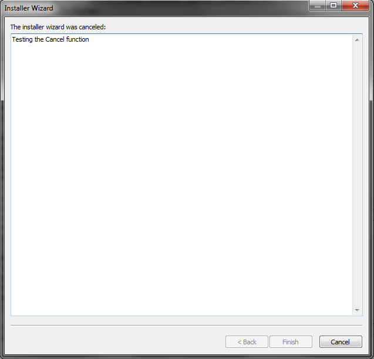
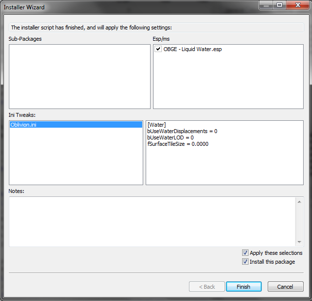
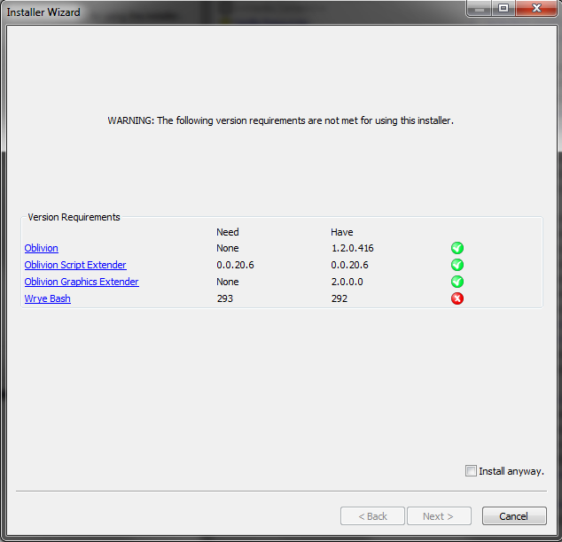

Contents
Introduction
This readme covers the most technical aspects of Wrye Bash, being the Wizard scripting language and the syntax used in Mod Checker rulesets. Information on the most commonly used aspects of Wrye Bash may be found in the General Readme, and the Advanced Readme holds information on more advanced and less commonly used features. Wrye Bash's version history is stored in the Version History document.
DarNified Books Wtxt Formatting
The DarNified Books setting in the Bashed Patch's tweaks allows the use of Wtxt formatting, which is applied if the first line of a book is == title ==
<<,^^or>>at the beginning of a line generate adiv align=left,div align=centerordiv align=righttag respectively.== text ==generates a level 2 header.=== textgenerates a level 3 header.__text__,~~text~~and**text**generate emphasised text.
BAIN Wizards
Overview
Bain Wizards allow mod authors to include a simple configuration script with their packages. Wizards run on a simple scripting language similar to OBMM script, contained in a wizard.txt file in the package. When run, the wizard will run through a series of windows to allow you to select options, then show a summary page at the end telling you which sub-packages and plugins will be selected, and any INI tweaks that will be applied.
Those using Notepad++ to write their install scripts may want to use Utumno's BAIN wizard Script Highlighter for Notepad plus plus as it features code folding and syntax highlighting to make spotting mistakes easier.
There is a similar BAIN Wizard Syntax for EmEditor syntax highlighter for EmEditor created by broken85.
Dialogues
You may use a number of different dialogues in a wizard. The available dialogs are described in this section.
-
SelectOne - This dialog displays a list of options, but only one can be selected. It will be shown when a SelectOne keyword is used. Each option can display an image associated with it, and a description as well. To see a larger version of the image displayed, either right click or middle click on the image. The wizard can specify a default answer, and if you are running it as an Auto-Wizard, then this page will be skipped, using the default option.

-
SelectMany - This dialog displays a list of options, and any combination can be selected (including none at all). It will be shown when a SelectMany keyword is used. Each option can display an image associated with it, and a description as well. To see a larger version of the image displayed, either right click or middle click on the image. The wizard can specify default options, and if you are running it as an Auto-Wizard, then this page will be skipped, using the default options.

-
Cancel - This dialog will be shown if the wizard cancels execution for some reason, activated by the Cancel keyword. If a reason is given, it will be displayed.
 -
Error - This dialog will be shown if the wizard encounters an error in the wizard file. The wizard will then quit.

-
Finish - This dialog will be shown at the end of the wizard, to show you which sub-packages and plugins will be selected. It will be shown either when the end of a wizard file is reached, or if the Return keyword is used. It also shows what INI Tweaks will be applied, and also serves as a place for any extra notes from the mod author to be displayed.
 -
Version Warning - This dialog is displayed if the user's system doesn't meet the package's game, script extender or graphics extender requirements. These can be specified via the RequireVersions keyword.

Language Structure
Each line of a Wizard contains one statement. To carry a statement across multiple lines, end each line of the statement with a backslash \. This will cause BAIN to read the next line as if it were part of the first.
Wizard syntax is case-sensitive, apart from filenames. Make sure when writing Wizards that you use the correct case.
Variable names may contain any alphanumeric characters (a-z, A-Z, 0-9) and underscores (_), but cannot start with a number. You cannot declare a variable with the same name as a keyword, function or constant. Variables can be assigned values using an assignment operator, and can hold the following data types:
- Integers: whole numbers that can be either positive, negative or zero. You can perform mathematical operations on integers using the mathematical operators.
- Decimals: real numbers that contain a decimal point, eg.
0.123,-3.5,7.0. You can perform mathematical operations on decimals using the mathematical operators. - Strings: any string of characters, eg.
"Hello",'World!'. As in the examples, strings must be enclosed within double or single quotes. Special characters may be included in strings by using an escape sequence. Strings can be added and multiplied using the addition and multiplication operators. One string may be checked for within another using the in operator.
Constants are variables that are pre-defined by BAIN and cannot have their values changed. You cannot create new constants.
Comments are extra text ignored by the Wizard engine, to explain what the Wizard code does to other readers. Comments begin with a semicolon ; and last until the end of the line.
Expressions are evaluated using the standard order of operations, eg. 3 + 6 * 2 will evaluate to 15.
Common Mistakes
- Incorrect case. For example, make sure you're using
SelectSubPackageand notSeleCtsUbpacKage. - Mismatched quotes. Make sure that if you start a string with a double quote, you end it with a double quote, and similarly strings that start with a single quote should end with a single quote.
- Missing or extra backslashes at the end of a line. This causes an error or not all options to display.
- Extra spaces or tabs at the end of a line can cause issues with options showing up, eg.
"","",""\ - Referencing images that don't exist. Make sure any images you try to display in the Wizard actually exist.
Functions
CompareObVersion - Deprecated. Use CompareGameVersion instead.
CompareGameVersion - Used to test the installed version of the game Wrye Bash is running for against the version you specify.
CompareGameVersion(version_string)
- version_string - A string formatted to hold a file version number, eg.
"1.2.0.416".
Return values:
-1- Installed version is less than the version specified in version_string.0- Installed version is equal to the version specified in version_string.1- Installed version is greater than the version specified in version_string.
CompareOBSEVersion - Deprecated. Use CompareSEVersion instead.
CompareSEVersion - Used to test the installed version of the Script Extender of the game that Wrye Bash is running for against the one you specify.
CompareSEVersion(version_string)
- version_string - A string formatted to hold a file version number, eg.
"0.0.20.1".
Return values:
-1- Installed version is less than the version specified in version_string.0- Installed version is equal to the version specified in version_string.1- Installed version is greater than the version specified in version_string, or there is no Script Extender available for the game.
CompareOBGEVersion - Deprecated. Use CompareGEVersion instead.
CompareGEVersion - Used to test the installed version of the Graphics Extender of the game that Wrye Bash is running for against the one you specify.
CompareGEVersion(version_string)
- version_string - A string formatted to hold a file version number, eg.
"3.0.1".
Return values:
-1- Installed version is less than the version specified in version_string.0- Installed version is equal to the version specified in version_string.1- Installed version is greater than the version specified in version_string, or there is no Graphics Extender available for the game.
CompareWBVersion - Used to test the installed version of Wrye Bash against the one you specify.
CompareWBVersion(version_string)
- version_string - A string formatted to hold a file version number, eg.
"307".
Return values:
-1- Installed version is less than the version specified in version_string.0- Installed version is equal to the version specified in version_string.1- Installed version is greater than the version specified in version_string.
DataFileExists - Tests for the existence of a file in the Data directory. If the file you are testing for is a plugin, this will also detect ghosted versions of the file.
DataFileExists(file_name [, ..., file_name_n])
- file_name - A string or variable holding a string, specifying the path relative to the Data directory to test. For example
using
"Oblivion.esm"would test for"[path to game]\Data\Oblivion.esm". Notes:- When specifying a path below the Data directory, use double slashes to indicate folder separation. For example assuming
MenuQue.dll is installed correctly,
"obse\\plugins\\MenuQue.dll"will work but"obse\plugins\MenuQue.dll"will fail. - You can also look for files above the Data directory using the following syntax:
"..\\SoundCommands.log" - When testing for multiple files, separate each file with commas. They do not have to all be in the same directory. Example:
DataFileExists("Oblivion.esm","..\\SoundCommands.log","obse\\plugins\\MenuQue.dll")will accurately test to see if each of the files exist.
- When specifying a path below the Data directory, use double slashes to indicate folder separation. For example assuming
MenuQue.dll is installed correctly,
Return values:
True- All of the files exist.False- One or more of the files do not exist.
GetPluginLoadOrder - Returns the current load order index of a plugin in the Data directory. You may want to combine this with GetPluginStatus to check if the plugin is enabled first.
GetPluginLoadOrder(file_name [, fallback_val])
- file_name - A string or variable holding a string, specifying the path relative to the Data directory for the plugin whose load order should be retrieved.
- fallback_val - The value that should be returned if the plugin has no load order index (e.g. if it is disabled or not installed).
-1by default.
Return values:
- fallback_val - If the plugin has no load order index.
- Otherwise, a positive integer corresponding to the plugin's load order index.
GetEspmStatus - Deprecated. Use GetPluginStatus instead.
GetPluginStatus - Tests the current status of a plugin in the Data directory. Takes ghosting into account when testing the status.
GetPluginStatus(file_name)
- file_name - A string or variable holding a string, specifying the path relative to the Data directory for the plugin to test.
Return values:
-1- The plugin does not exist.0- The plugin is not active, imported, or merged. Its checkbox in Wrye Bash's Mods tab is .
.1- The plugin is not active, but has portions imported into the Bashed Patch. Its checkbox in Wrye Bash's Mods tab is .
.2- The plugin is active. Its checkbox in Wrye Bash's Mods tab is .
.3- The plugin is merged into the Bashed Patch. Its checkbox in Wrye Bash's Mods tab is .
.
DisableINILine - Tells Wrye Bash to create an ini tweak file that disables the specified setting by commenting it out. Otherwise, behaves identically to EditINI.
DisableINILine(file_name, section, setting)
- file_name - String: the name of the ini file you wish to edit, relative to the Data directory.
- section - String: the section in the ini where setting resides.
- setting - String: the setting you wish to disable.
EditINI - Tells Wrye Bash to create an ini tweak file with some tweaks in it. If the file that you tell Wrye Bash to apply the tweak to is from the current installer or is the game's ini file, then Wrye Bash will also automatically apply the tweak, otherwise, it will just be generated for the user to apply manually.
EditINI(file_name, section, setting, value [, comment])
- file_name - String: the name of the ini file you wish to edit, relative to the Data directory.
- section - String: the section in the ini where setting resides, or 'set' or 'setGS' or 'SetNumericGameSetting' (see examples below).
- setting - String: the setting you wish to change.
- value - Any value: the value to set the setting to.
- comment - String: Optional. A comment to include with this tweak.
Exec - This will cause the Wizard to execute lines that are passed to it. This is useful for creating dynamically generated menus.
Exec(lines)
- lines - A string containing lines to execute, separated by newline characters, or a variable containing such a string. Any backslashes that are to be outputted must be written as triple backslashes. Eg.
\'should be written\\\'.
EndExec - Internal function used to mark the end of the lines executed by an Exec statement. Attempting to explicitly call it will result in an error.
EndExec(line_count)
- line_count - The number of lines that the matching Exec statement contained.
str - Used to convert a value into a string, for example when trying to concantenate a integer or decimal to a string.
str(value)
- value - Any value. An integer, decimal, variable, constant or string.
Returns:
- String representation of value. For example,
str(5)would return"5".
int - Used to convert a value to an integer, for example converting a value held in a string to a integer value.
int(value)
- value - Any value. An integer, decimal, variable, constant or string.
Returns:
- Integer value of value, if possible. For example
int('65')would return65. 0- If integer conversion is not possible.
float - Used to convert a value to decimal, for example converting a value held in a string to a decimal value.
float(value)
- value - Any value. An integer, decimal, variable, constant or string.
Return values:
- Decimal value of value, if possible. For example
int('2.4')would return2.4. 0.0- If decimal conversion is not possible.
len - Used to find the length of a string.
len(string)
- string - A string, variable, or constant.
Return values:
- Length of the string if possible.
0- If length calculation was not possible.
endswith - Test what a string ends with.
endswith(string, ending_1 [, ..., ending_n])
- string - A string, variable or constant.
- ending_1 through ending_n - A string, variable or constant.
Return values:
True- If the string ends in any of the endings specified.False- If the string does not end in any of the endings specified.
startswith - Test what a string starts with.
startswith(string, prefix_1 [, ..., prefix_n])
- string - A string, variable or constant.
- prefix_1 through prefix_n - A string, variable or constant.
Return values:
True- If the string begin with any of the prefixes specified.False- If the string does not begin with any of the prefixes specified.
lower - Convert a string to lower case.
lower(string)
- string - A string or variable.
Return values:
- string converted to lowercase if possible.
- The original string if an error occurred.
find - Return index of first occurrence of a substring.
find(string, substring [, start, stop])
- string - A string or variable to search in.
- substring - A string or variable to search for.
- start - Index at which to start searching in string. If not specified, searching will start at the beginning of string.
- stop - Index at which to stop searching. Optional. If not specified, searching will stop at the end of string.
Return values:
- The index of the first occurrence of substring in string.
-1- If substring could not be found.
rfind - Return index of last occurrence of a substring.
rfind(string, substring [, start, stop])
- string - A string or variable to search in.
- substring - A string or variable to search for.
- start - Index at which to start searching in string. If not specified, searching will start at the beginning of string.
- stop - Index at which to stop searching. Optional. If not specified, searching will stop at the end of string.
Return values:
- The index of the last occurrence of substring in string.
-1- If substring could not be found.
GetFilename - For a string that contains a path, returns the filename part of the string.
GetFilename(path_string)
- path_string - A string or variable of the path to work with.
Return values:
- The filename in path_string.
- An empty string, if path_string is not a path.
GetFolder - For a string that contains a path, returns the folder part of the string.
GetFolder(path_string)
- path_string - A string or variable of the path to work with.
Return values:
- The folder in path_string.
- An empty string if path_string does not contain a folder, or is not a path.
Keywords
Keywords are like functions, but don't require brackets around their arguments, and are used for controlling the flow of a wizard or performing special tasks.
SelectSubPackage - Cause the specified sub-package to be selected for installation. This is equivalent to checking the sub-package and all the plugins in that subpackage in the BAIN window.
SelectSubPackage name
- name - A string or variable holding the name of the sub-package to select.
DeSelectSubPackage - Cause the specified sub-package to be de-selected from installation. This is equivalent to un-checking the sub-package in the BAIN window.
DeSelectSubPackage name
name- A string or variable holding the name of the sub-package to de-select.
SelectEspm - Deprecated. Use SelectPlugin instead.
SelectPlugin - Cause the specified plugin to be selected for installation. This is equivalent to checking the plugin in the Plugin Filter of the BAIN window.
SelectPlugin plugin_name
- plugin_name - A string or variable holding the name of the plugin to select.
DeSelectEspm - Deprecated. Use DeSelectPlugin instead.
DeSelectPlugin - Cause the specified plugin to be deselected from installation. This is equivalent to un-checking the plugin in the Plugin Filter of the BAIN window.
DeSelectPlugin plugin_name
- plugin_name - A string or variable holding the name of the plugin to de-select.
SelectAll - Cause all sub-packages and plugins to be selected for installation. This is equivalent to first checking all sub-packages in the BAIN window, then checking all plugins in the Plugin Filter of the BAIN window.
SelectAll
DeSelectAll - Cause all sub-packages and plugins to be de-selected from installation. This is equivalent to first un-checking all plugins in the Plugin Filter of the BAIN window, then un-checking all sub-packages in the BAIN window.
DeSelectAll
SelectAllEspms - Deprecated. Use SelectAllPlugins instead.
SelectAllPlugins - Cause all plugins to be selected for installation. This is equivalent to checking all plugins in the Plugin Filter of the BAIN window.
SelectAllPlugins
DeSelectAllEspms - Deprecated. Use DeSelectAllPlugins instead.
DeSelectAllPlugins - Cause all plugins to be de-selected from installation. This is equivalent to un-checking all plugins in the Plugin Filter of the BAIN window.
DeSelectAllPlugins
RenameEspm - Deprecated. Use RenamePlugin instead.
RenamePlugin - Change the installed name of a plugin. Note that the file extension must stay the same.
RenamePlugin original_name, new_name
- original_name - The name of the plugin, as it appears in the BAIN package.
- new_name - The new name you want to have the plugin installed as.
ResetEspmName - Deprecated. Use ResetPluginName instead.
ResetPluginName - Resets the name of a plugin back to its default name.
ResetPluginName original_name
- original_name - The name of the plugin, as it appears in the BAIN package.
ResetAllEspmNames - Deprecated. Use ResetAllPluginNames instead.
ResetAllPluginNames - Resets the names of all plugins back to their default names.
ResetAllPluginNames
Note - Add a note to the user to be displayed at the end of the wizard, on the finish page. The '- ' will be added automatically.
Note text
- text - A string, string variable, or expression that evaluates to a string, to be displayed on the finish page.
Return - Signals completion of the wizard. This will jump right to the finish page.
Return
Cancel - Cancels the wizard, with an optional text to display in a dialog as to why the wizard was canceled.
Cancel [text]
- text - Optional. Text to display in a dialog as to why the wizard was canceled.
RequireVersions - Tests the users system against version requirements you specify. If the requirements are not met, a warning dialog will be shown asking if you wish to continue anyway.
RequireVersions game_version [, se_version, ge_version, wrye_bash_version]
- game_version - Version of the game to test for. See CompareGameVersion for the proper format of the string.
- se_version - Optional. Version of the Script Extender to test for. See CompareSEVersion for the proper format of the string.
- ge_version - Optional. Version of the Graphics Extender to test for. See CompareGEVersion for the proper format of the string.
- wrye_bash_version - Optional. Version of Wrye Bash to test for. See CompareWBVersion for more info.
If-Elif-Else-EndIf - A basic If control block.
If statement
lines
Elif statement
lines
Elif statement
lines
Else
lines
EndIf
If- Begins the control block.- statement - If statement evaluates to
True, then the lines following it will be run, until the next Elif, Else, or EndIf.
- statement - If statement evaluates to
Elif- statement - If statement evaluates to
True, and the initialIfand none of the previousElifs wereTrue, then the lines following thisElifwill be run, until the nextElif,Else, orEndIf.
- statement - If statement evaluates to
Else- If the initialIfand none of the previousElifs wereTrue, then the lines following will be run until anEndIfis met.EndIf- Signals the end of theIfcontrol block.
While-Continue-Break-EndWhile - A while loop.
While statement
lines
Continue
lines
Break
lines
EndWhile
While- Begins the while loop.- statement - If statement evaluates to
True, execution of the lines begins, otherwise execution skips to after theEndWhile.
- statement - If statement evaluates to
Continue- Signals the while loop to begin over again at theWhilestatement.Break- Signals the while loop to end execution, skipping to after theEndWhile.EndWhile- Ends the while loop. statement is re-evaluated, and ifTrue, execution begins again at the start of theWhileblock.
For-Continue-Break-EndFor - A For loop.
For var to start_value to end_value [by increment_value]
lines
Continue
lines
Break
lines
EndFor
For sub in SubPackages
For file in sub
lines
EndFor
EndFor
For- Begins the for loop. There are three types of for loop.var from start_value to end_value [by increment_value]- var - A variable that will hold values.
- start_value - Initial value of var.
- end_value - value of var that will end the for loop.
- increment_value - Optional. This the value that will be added to var at the end of each run of the loop. Defaults to
1if start_value is greater than end_value or-1otherwise.
sub in SubPackages- This type of for loop iterates over the names of the SubPackages in the current package.- sub - A variable that holds the names of the SubPackages.
file in sub- This type of for loop iterates over the names of the files in the given subpackage. Filenames are relative to the Data directory, before any remapping that would normally be done by BAIN.- file - A variable that holds the filenames.
- sub - The name of the subpackage to iterate through.
Continue- Signals the for loop to begin over again at theForstatement.Break- Signals the for loop to end execution, skipping to after theEndFor.EndFor- Ends the for loop.
SelectOne - Shows a dialog where the user can select one option from a list of options.
SelectOne 'description', \
'option 1', 'description 1', 'image 1', \
'option 2', 'description 2', 'image 2', \
..., \
'option n', 'description n', 'image n'
Case 'option 1'
lines
Break
Case 'option 2'
lines
Break
Case 'option n'
lines
Break
Default
lines
Break
EndSelect
SelectOne- After the user presses the "Next" button, this begins a Select control block.- description - The text that will be displayed at the top of the dialog.
- option n - The text of the specific option. If the text begins with a "|", this is considered the default option and will be selected by default.
- description n - The description to display when option n is selected.
- image n - The image to display when option n is selected. An empty string will make no image display.
Case option- The lines following theCasewill be run if the user selected its corresponding option on the dialog, until aBreakorEndSelectis met.- option - The option that the
Casecorresponds to.
- option - The option that the
Default- The lines following theDefaultwill be run, until aBreakorEndSelect, if none of theCaseoptions have been run.Break- Stops running lines in the currentCaseorDefaultblock.EndSelect- Signals the end of the Select control block.
SelectMany - Shows a dialog where the user can select multiple options from a list. After the user presses the "Next" button, this begins a Select control block. See SelectOne for usage.
SelectMany 'description', \
'option 1', 'description 1', 'image 1', \
'option 2', 'description 2', 'image 2', \
..., \
'option n', 'description n', 'image n'
Case 'option 1'
lines
Break
Case 'option 2'
lines
Break
Case 'option n'
lines
Break
EndSelect
Operators
Mathematical Operators
Note: For any of these operators, you can mix decimals and integers. In such a case, the integer will simply be promoted to a decimal, and the result will be a decimal as well.
Addition: +. Adds one integer or decimal to another, or concatenates two strings.
1 + 1 ; == 2
1 + 1.0 ; == 2.0
1.0 + 1 ; == 2.0
1.0 + 1.0 ; == 2.0
"foo" + "bar" ; == "foobar"
Subtraction: -. Substracts one integer or decimal from another.
1 - 1 ; == 0
1 - 1.0 ; == 0.0
1.0 - 1 ; == 0.0
1.0 - 1.0 ; == 0.0
Multiplication: *. Multiplies one integer or decimal with another, or copies a string multiple times (see example).
1 * 1 ; == 1
1 * 1.0 ; == 1.0
1.0 * 1 ; == 1.0
1.0 * 1.0 ; == 1.0
; Multiplying a string by
; an integer just concatenates
; several copies of it:
"foo" * 2 ; == "foofoo"
3 * "h" ; == "hhh"
; Note: the other type _must_
; be an integer, decimals
; are not allowed:
2.0 * "a" ; error
Division: /. Divides one integer or decimal by another. Division by zero causes an error.
1 / 1 ; == 1
1 / 1.0 ; == 1.0
1.0 / 1 ; == 1.0
1.0 / 1.0 ; == 1.0
1 / 0 ; error
1.0 / 0.0 ; error
Modulo: %. Returns the remainder of dividing one integer or decimal by another. If the second argument is 0, an error is raised.
5 % 2 ; == 1
4 % 2 ; == 0
5 % 5 ; == 0
5.0 % 2.5 ; == 0.0
-7 % 4 ; == -3
1 % 0 ; error
1.0 % 0.0 ; error
Exponentiation: ^. Raises one integer or decimal to the power of another.
2 ^ 2 ; == 4
2 ^ 2.0 ; == 4.0
2.0 ^ 2 ; == 4.0
2.0 ^ 2.0 ; == 4.0
Assignment Operators
Assignment operators are used to assign values to variables. Compound assignment operators are a combination of assignment operator and mathematical operator, performing the operation and assigning it to a variable in one step.
Assignment: =
test = 3 ; test now has value 3
foo = "bar" ; foo now has value "bar"
Compound Assignment: +=, -=, *=, /=, ^=
- Addition (
var += expr): Assigns the result ofvar + exprto var. In other words, this is equivalent tovar = var + expr. May also be used to concatenate two strings, just like+. - Subtraction (
var -= expr): Assigns the result ofvar - exprto var. In other words, this is equivalent tovar = var - expr. - Multiplication (
var *= expr): Assigns the result ofvar * exprto var. In other words, this is equivalent tovar = var * expr. May also be used to repeat a string using an integer, just like*. - Division (
var /= expr): Assigns the result ofvar / exprto var. In other words, this is equivalent tovar = var / expr. - Modulo (
var %= expr): Assigns the result ofvar % exprto var. In other words, this is equivalent tovar = var % expr. - Exponentiation (
var ^= expr): Assigns the result ofvar ^ exprto var. In other words, this is equivalent tovar = var ^ expr.
Increment And Decrement Operators
These operators increase or decrease a variable containing an integer or decimal by 1 and then return the changed value. They can be placed them before or after the variable that should be changed.
Warning: If you are familiar with other programming languages, you may expect ++var and var++ to behave differently. However, in wizards they both behave the same way, returning the new value (var + 1) in both cases. In other words, wizards only support pre-increment and pre-decrement operators.
- Increment:
++. Increases a variable by1and returns the new value.foo = 1 ; foo == 1 bar = foo++ ; foo == 2, bar == 2 ++bar ; foo == 2, bar == 3 - Decrement:
--. Decreases a variable by1and returns the new value.foo = 3 ; foo == 3 bar = foo-- ; foo == 2, bar == 2 --bar ; foo == 2, bar == 1
Boolean Operators
Boolean operators can be used to test the logical truth of values.
And: &, and. Returns True if both sides of the expression are true and False otherwise.
var1 & var2
var1 and var2
Or: |, or. Returns True if either side of the expression is true and False otherwise.
var1 | var2
var1 or var2
Not: !, not. Returns True if the expression is False, and False if the expression is True.
!value
not value
In: in. Returns True if the left hand side of the expression is contained in the right hand side, and False otherwise.
If value in SubPackages
; do something here
EndIf
Comparison Operators
Comparison operators are used to compare two values or variables with one another.
Equal: ==. Returns True if the left hand side of the expression is equal to the right hand side of the expression, and False otherwise.
var1 == var2
Not Equal: !=. Returns True if the left hand side of the expression is not equal to the right hand side of the expression, and False otherwise.
var1 != var2
Greater Than or Equal: >=. Returns True if the left hand side of the expression is greater than or equal to the right hand side of the expression, and False otherwise.
var1 >= var2
Greater Than: >. Returns True if the left hand side of the expression is greater than the right hand side of the expression, and False otherwise.
var1 > var2
Less Than or Equal: <=. Returns True if the left hand side of the expression is less than or equal to the right hand side of the expression, and False otherwise.
var1 <= var2
Less Than: <. Returns True if the left hand side of the expression is less than the right hand side of the expression, and False otherwise.
var1 < var2
Case Insensitive Operators
Some of the operators have case insensitive versions, which function in the same way as their normal versions, but when comparing strings they ignore case. Case insensitive versions of operators end with a colon :. The following case insensitive operators are available:
==:!=:>=:>:<=:<:in:
Dot Operator
The dot operator can be used to call a function on a variable without having to specify the variable in the function's arguments. This functionality will be familiar to anyone with experience in object-oriented programming:
; These two are equivalent
myStr.startswith("foo")
startswith(myStr, "foo")
The following functions can be used with the dot operator:
lenendswithstartswithlowerfindrfind
Indexing and Slicing
Indexing is used to access a specific location in a sequence. Slicing is an extension of indexing that returns a part of the sequence. Currently only strings and string variables can be indexed / sliced. The syntax used is identical to Python's syntax.
Indexing:
string[index]
- index: The index to retrieve an item from. The first item in a sequence has an index of 0.
Slicing:
string[start:stop:step]
- start: The index to start at. The first item in a sequence has an index of 0. If not specified, indexing will begin at 0.
- stop: The index to stop at. If not specified but a colon
:is supplied, indexing will continue to the end of the sequence. If not specified and no colon is supplied, only one character will be indexed. - step: How much to increment by when indexing. For example, a value of
2would return every second item in the sequence. If not specified, a value of1will be used.
Negative values for index, start and stop will be relative to the end of the sequence. For example, -1 would mean the first character from the end of the sequence.
Examples:
"Hello"[0] ; returns "H"
"Hello"[2] ; returns "l"
"Hello"[0:] ; returns "Hello"
"Hello"[:] ; returns "Hello"
"Hello"[0:2] ; returns "He"
"Hello"[-1] ; returns "o"
"Hello"[1:3] ; returns "el"
"Hello"[-2:] ; returns "lo"
Standard Constants
Only three constants are defined in BAIN Wizards:
True - True. Equal to boolean true (text representation) or 1 (binary representation).
False - False. Equal to boolean false (text representation) or 0 (binary representation).
SubPackages - A list of strings. Contains the names of the subpackages of the installer that this wizard belongs to. Can be iterated over with a For statement or used with the in operator.
Escape Sequences
Escape sequences are special sequences of characters you can use to get a different character outputted. The escape sequences allowed are:
\": Outputs a double quote character". This allows you to put quotes in a string without causing the Wizard engine to think it's reached the end of the string.\': Outputs a single quote character'. This allows you to put quotes in a string without causing the Wizard engine to think it's reached the end of the string.\t: Outputs a tab.\n: Outputs a new line.\\: Outputs a backslash\.
Examples
Wizards In The Wild
The following mods have Wizard scripts that may be useful references: Animated Window Lighting System and Chimneys - AWLS, Bain Conversion Files, Bananasplit Better Cities, Fast and Easy Frans WIZBAIN Archive Maker -ENGLISH ONLY-, Metallicow Cursor Mod, Unique Landscapes Compilation, Weather - All Natural.
Create A Package Overview
Every Wizard should have a short overview for the user to read before proceeding with the actual installation questions. Notice how in the example below there are no Case statements used and the default character | is before the Start Here_Readme.
SelectOne "Welcome to the ExampleMod's mod Setup Wizard", \
"|Start Here_Readme", "If this is the first time you install this mod it's recommended that you carefully read the rest of the selections readme's to have an idea of what the optional parts of this mod do.", "", \
"ExampleMod Overview", "ExampleText bla bla bla \n\nBla Bla Bla \n\n Bla Bla\n Bla", "", \
"Changelog", "Example Fixes Release 1.01 \nExample Full Public 1.0 Release \nExample 2nd Beta Release 0.91 \n0.9 - Example Beta Release \n0.3 - Example Alpha Release \n0.01 - Example Initial Release", "", \
"Guidelines for a Example install", "", "", \
"ExampleMod Screenshots", "", "Screenshots\\ExampleScreenshot.jpg", \
"Credits\\Authors", "Wrye - For BAIN. Woooooooot! \nLojack - For the wonderful BAIN wizard installer feature. \nMetallicow - For chewing the cud.", "", \
"Language", "Language or Nationality this BAIN wizard was written in. \n\n English (USA)", "Wizard Images\\EnglishUSA.jpg"
EndSelect
Yes/No Question
Useful for when you want to ask the user a yes/no question. SelectOne and SelectSubPackage in the example below could be replaced by another keyword.
SelectOne "Example: Yes/No Question?", \
"Yes", "Description", "Wizard Images\\Yes.jpg", \
"No", "Description", "Wizard Images\\No.jpg"
Case "Yes"
SelectSubPackage "00 Example Subpackage" ;;;Action/No Action
Break
Case "No"
;No Plugin ;;Action/No Action
Break
EndSelect
Check For A Plugin
Lets say that you want to check the users data folder for a specific plugin, to check if a patch (you might have created) should apply.
If DataFileExists("ExamplePlugin.esp")
Note "ExamplePlugin Detected." ;;;Action/No Action
SelectPlugin "PatchPlugin.esp" ;;;Action/No Action
Else ; ExamplePlugin.esp wasn't detected
; No Plugin ;;;Action/No Action
EndIf
Use New BAIN Wizard Features Safely
Useful for when you use features available only in recent versions of Wrye Bash but want to retain support for users with older versions.
If CompareWBVersion('292') >= 0
; User is running 292+
; Do some 292+ only stuff here, like...
EditINI('Oblivion.ini', 'Display', 'bAllowScreenShot', 1)
Else
; User is running < 292, so EditINI is unavailable.
Note "Don't forget to enable screenshots in Oblivion.ini"
EndIf
Misc. Function Examples
These:
EditINI('TargetINI.ini', 'set', 'ANVars.UseEW', 1)
EditINI('TargetINI.ini', 'setGS', 'fPCBaseMagickaMult', 1)
EditINI('TargetINI.ini', 'SetNumericGameSetting', 'fPerkSneakAttackMarksmanNoviceMult', 1.5, "default is 2.0")
Would create Ini Tweaks:
set ANVars.UseEW to 1
setGS fPCBaseMagickaMult 1
SetNumericGameSetting fPerkSneakAttackMarksmanNoviceMult 1.5;default is 2.0
This:
GetFilename("C:\Program Files\Bethesda Softworks\Oblivion\Oblivion.exe")
Would return "Oblivion.exe". This:
GetFilename("C:\Program Files\Bethesda Softworks\Oblivion")
Would return an empty string.
This:
GetFolder("Data\mine.esp")
Would return "Data". This:
GetFolder("mine.esp")
Would return an empty string.
Wizards vs. OBMM Scripts
This section compares the functions and keywords available in Wizards against those available in OBMM scripts.
Functionality with direct correlation between OBMM scripts and Wizards
| OBMM Script | Wizards |
|---|---|
If <function> [...]
IfNot <function> [...]
| If statement
If not statement
|
Else
EndIf
| Elif
Else
EndIf
|
If DialogYesNo <Message> [Title]
| SelectOne message, "Yes", yes_description, yes_image, "No", no_description, no_image
Case "Yes"
statements
Break
Case "NO"
statements
Break
EndSelect
|
If DataFileExists <FileName>
| If DataFileExists(filename)
|
If ScriptExtenderPresent
| If CompareSEVersion("0.0.0.0") == 1
|
If ScriptExtenderNewerThan <version>
| If CompareSEVersion(version) == 1
|
If GraphicsExtenderPresent
| If CompareGEVersion("0.0.0.0") == 1
|
If GraphicsExtenderNewerThan <version>
| If CompareGEVersion(version) == 1
|
If OblivionNewerThan <version>
| If CompareGameVersion(version) == 1
|
If Equal <arg1> <arg2>
If GreaterThan <arg1> <arg2>
If GreaterEqual <arg1> <arg2>
If fGreaterThan <arg1> <arg2>
If fGreaterEqual <arg1> <arg2>
| If statement == statement
If statement > statement
If statement >= statement
If statement > statement
If statement >= statement
|
Select <Title> <Option1> [Option2] [...]
SelectWithPreview <Title> <Option1> <ImagePath1> [Option2] [ImagePath2] [...]
SelectWithDescriptions <Title> <Option1> <Description1> [Option2] [Description2] [...]
SelectWithDescriptionsAndPreviews <Title> <Option1> <ImagePath1> <Description1> [Option2] [ImagePath2] [Description2] [...]
| SelectOne title, option1, description1, image1, option2, description2, image2 [...]
|
SelectMany <Title> <Option1> [Option2] [...]
SelectManyWithPreview <Title> <Option1> <ImagePath1> [Option2] [ImagePath2] [...]
SelectManyWithDescriptions <Title> <Option1> <Description1> [Option2] [Description2] [...]
SelectManyWithDescriptionsAndPreviews <Title> <Option1> <ImagePath1> <Description1> [Option2] [ImagePath2] [Description2] [...]
| SelectMany title, option1, description1, image1 [...]
|
Case <option>
Default
Break
EndSelect
| Case option
Default
Break
EndSelect
|
For Count <Variable> <Start> <End> [Step]
Continue
Exit
EndFor
| For variable from start to end by step
Continue
Break
EndFor
|
Return
| Return
|
DontInstallPlugin <Plugin>
InstallPlugin <Plugin>
| DeSelectPlugin plugin
SelectPlugin plugin
|
CopyPlugin <CopyFrom> <CopyTo>
| RenamePlugin original_name new_name
|
EditINI <section> <key> <value>
| EditINI("Oblivion.ini", section, setting, value)
|
FatalError
| Cancel [message]
|
SetVar <Variable> <Value>
| variable = value
|
StringLength <Variable> <String>
| variable = len(string)
variable = string.len()
|
iSet <Variable> <expression>
fSet <Variable> <expression>
| variable = expression
|
ExecLines <lines>
| Exec(lines)
|
SubString <Variable> <String> <startfrom> [length]
| find(variable, string, start, stop)
variable.find(string, start, stop)
|
Functions in OBMM with equivalent methods in Wizards
| OBMM Script | Wizards |
|---|---|
If VersionGreaterThan <version>
If VersionLessThan <version>
| Use CompareWBVersion to check the Wrye Bash version.
|
Message <Message> [Title]
DisplayImage <Image File Path> [Title]
DisplayText <Text File Path> [Title]
| Similar functionality can be reproduced using Note and SelectOne or SelectMany keywords.
|
ConflictWith <ModName> [Comment] [Level]
DependsOn <ModName> [Comment] [Level]
| Similar functionality can be reproduced using If DataFileExists(modname).
|
DontInstallDataFile <FileName>
InstallDataFile <FileName>
DontInstallDataFolder <FolderName> [RecurseSubfolders]
InstallDataFolder <FolderName> [RecurseSubfolders]
CopyDataFile <CopyFrom> <CopyTo>
CopyDataFolder <CopyFrom> <CopyTo> [RecurseSubfolders]
| Similar functionality can be obtained by packaging the mod differently, and then using SelectSubPackage and DeSelectSubPackage.
|
For Each DataFolder <Variable> <FolderPath> [RecurseSubFolders] [SearchString]
For Each DataFile <Variable> <FolderPath> [RecurseSubFolders] [SearchString]
For Each PluginFolder <Variable> <FolderPath> [RecurseSubFolders] [SearchString]
For Each Plugin <Variable> <FolderPath> [RecurseSubFolders] [SearchString]
| Use:
For subpackage in SubPackages
and/or:
to iterate over files and folders in an installer. Then use:
and other string manipulation functions to test file names and folders. |
Functions in OBMM without equivalent methods in Wizards
SelectVar <Variable>
SelectString <Variable>
Goto <label>
Label <label>
LoadBefore <Plugin1> <Plugin2>
LoadAfter <Plugin1> <Plugin2>
UncheckESP <plugin>
SetDeactivationWarning <plugin> <warning>
ConflictsWith <ModName> <MinMajorVersion> <MinMinorVersion><MaxMajorVersion> <MaxMinorVersion> [Comment] [Level]
ConflictsWithRegex <ModName> [Comment] [Level]
ConflictsWithRegex <ModName> <MinMajorVersion> <MinMinorVersion><MaxMajorVersion> <MaxMinorVersion> [Comment] [Level]
DependsOn <ModName> <MinMajorVersion> <MinMinorVersion><MaxMajorVersion> <MaxMinorVersion> [Comment] [Level]
DependsOnRegex <ModName> [Comment] [Level]
DependsOnRegex <ModName> <MinMajorVersion> <MinMinorVersion><MaxMajorVersion> <MaxMinorVersion> [Comment] [Level]
RegisterBSA <FileName>
UnregisterBSA <FileName>
EditShader <ShaderPackage> <ShaderName> <BinaryObjectPath>
SetGMST <file> <Editor ID> <new value>
SetGlobal <file> <Editor ID> <new value>
SetPluginByte <file> <offset> <new value>
SetPluginByte <file> <offset> <new value>
SetPluginShort <file> <offset> <new value>
SetPluginLong <file> <offset> <new value>
SetPluginFloat <file> <offset> <new value>
GetFolderName <Variable> <path>
GetFileName <Variable> <path>
GetFileNameWithoutExtension <Variable> <path>
CombinePaths <Variable> <path1> <path2>
RemoveString <Variable> <String> <startfrom> [length]
InputString <Variable> [Title] [Initial]
ReadINI <Variable> <section> <value>
ReadRenderInfo <Variable> <value>
EditXMLLine <file> <line number> <new line>
EditXMLReplace <file> <text to find> <text to replace>
Functions in Wizards without equivalent methods in OBMM
CompareWBVersion(version)
GetPluginStatus(plugin)
DisableINILine(file_name, section, setting)
str(value)
int(value)
float(value)
SelectAll
DeSelectAll
SelectAllPlugins
DeSelectAllPlugins
While expression
Continue
Break
EndWhile
RequireVersions oblivion, obse, obge, wrye_bash
Functions in OBMM that are meaningless in Wrye Bash
| OBMM Script | Wizards |
|---|---|
PatchDataFile <NewFile> <FileToPatch> [Create]
PatchPlugin <NewFile> <FileToPatch> [Create]
| Unnecessary due to BAIN's conflict resolution abilities. |
AllowRunOnLines | Wizards support run-on lines as standard. |
Mod Checker Rulesets
Overview
Rulesets allow the expansion of Wrye Bash's Mod Checker to analyse active load orders based on additional rules. There can be any number of ruleset files, which must be plain text files located in [Game]\Data\Bash Patches, with filenames ending in Rules.txt, for Wrye Bash to recognise them.
Rulesets are processed in alphabetical order of their filenames. A ruleset's output is given in the following order:
- A header containing the ruleset name, and any supplied header text.
- Warnings for any rules violated.
- ModSet reports, in the order that they are defined in the ruleset. These consist of:
- A configuration recap.
- Any suggestions made.
- Any include, exclude or merge only warnings generated.
Syntax
Comments
Any text beginning with ## will be ignored when the ruleset is processed, so can be used for making silent comments.
xxx ## [comment]
Header
The header command can be used to define what text is displayed in the header of the ruleset's output.
>> HEADER [text]
## A bulleted list:
* [text]
* [text]
* [text]
NOTES
The NOTES command lets you output notes to the Mod Checker report. The possible formatting options are given in the formatting sub-section below. Notes can be multiline.
ONLYONE
The ONLYONE command is a simple rule that states that only one of the rules following it may be active at any one time.
>> ONLYONE
Cobl Races.esp
Cobl Races - Balanced.esp
IF
The IF command is used to specify that the NOTES, CONFIG, SUGGEST and WARN commands following it are conditional on the existence of the plugin(s) specified as part of the IF command. The effect of an IF command lasts until the next IF command or the end of the file, whichever comes first.
If the IF command lists more than one plugin, then the condition statement is a logical AND combination of all listed plugins. You can also specify logical OR and NOT combinations.
|: This is the symbol for an OR combination of the previous plugin and the following plugin.-: This is the symbol for a NOT combination of the following plugin.
To specify that none of a set of plugins may exist, use a NOT for the first plugin of the set, then OR combine the it with the rest.
>> IF Alpha.esp
Beta.esp
| Gamma.esp
| Delta.esp
- Epsilon.esp
- Zeta.esp
| Eta.esp
Theta.esp
The above equates to Alpha AND (Beta or Gamma or Delta) AND NOT(Epsilon) AND NOT(Zeta or Eta) AND Theta.
CONFIG
The CONFIG command lets you specify check the status of a plugin or plugins and output its/their status (active/inactive/merged) and a comment. It is intended as a way of reminding the user what plugins they have active.
>> CONFIG
o Plugin1.esp //[comment]
o Plugin2.esp //[comment]
The o symbol denotes an Option
rule type.
SUGGEST
The SUGGEST command is intended as a way of providing non-critical suggestions. Its syntax is similar to that of the CONFIG command, but it has different rule types available for usage. The rule types are:
x:Inclusion
rule type. The specified plugin must be active. If the plugin is not active, the Mod Checker will output a message.-:Exclusion
rule type. The specified plugin must not be active. If the plugin is active, the Mod Checker will output a message.+:Merge Only
rule type. The specified plugin must be merged but not active. If the plugin is active or inactive and not merged, the Mod Checker will output a message.e:Existence
rule type. The specified file must exist. The file can be any file type, with the file path being given relative to the Data folder. If the file does not exist, the Mod Checker will output a message.
>> SUGGEST
x Plugin1.esp //[comment]
- Plugin2.esp //[comment]
+ Plugin3.esp //[comment]
e Plugin4.esp //[comment]
WARN
The WARN command is intended as a way of providing critical suggestions. It shares the same rule types as the SUGGEST command.
>> WARN
x Plugin1.esp //[comment]
- Plugin2.esp //[comment]
+ Plugin3.esp //[comment]
e Plugin4.esp //[comment]
ASSUME
The ASSUME command inserts the assumption that the given plugin exists into any IF statements following the command.
ASSUMEcommands last until the nextASSUMEcommand or until the end of the file, whichever occurs first.ASSUMEcommands are not additive: eachASSUMEcommand completely replaces the previous one.- To cancel the effect of an
ASSUMEcommand, use anASSUMEcommand with no mod listed for it. - To assume the existence of multiple plugins, list them on separate lines after the
ASSUMEcommand, like how is done for theIFcommand.
>> ASSUME Master.esm
Plugin1.esp
Plugin2.esp
Formatting
Non-silent comment lines have a few formatting options:
__[bold text]__~~[italic text]~~**[bold italic text]**[[http://example.com|Link to example.com]]
Example
The example ruleset below is a simple ruleset for Cobl.
>> HEADER This ruleset covers Cobl (Common Oblivion) and related mods.
>> ONLYONE
Cobl Races - Balanced.esp
bgBalancingEVCore.esp
>> IF Cobl Main.esm
>> CONFIG
o Cobl Glue.esp // Glues Cobl items into vanilla lists, cells
o Cobl Si.esp // Glues Cobl items into Shivering Isles cells.
o Cobl Tweaks.esp // Adds Cobl items to creatures and NPCs.
o Cobl Races.esp // Additional races, hairs, eyes.
o Cobl Races - Balanced.esp // Races and birthsigns given better balanced pros and cons.
o Salmo the Baker, Cobl.esp // Enhances Salmo the Baker in Skingrad.
o Cobl Filter Late.esp // Adds foods from various mods to the Dinner Plate. (Requires OBSE.)
>> SUGGEST
- Denock Arrows.esp // **Deactivate** and use Cobl Denock instead. (See Options menu.)
## HOMES
- AlchemistsCave.esp // Use [[http://planetelderscrolls.gamespy.com/View.php?view=OblivionMods.Detail&id=3996|Coblized version]] instead.
- Jagnot-SI-Bliss Aquaduct House.esp // Use [[http://ljosa.proboards57.com/index.cgi?board=releases&action=display&thread=548|Coblized version]] instead.
- PrincessImperialCityApartment.esp // Use [[http://planetelderscrolls.gamespy.com/View.php?view=OblivionMods.Detail&id=3997|Coblized version]] instead.
- PrisonersCampsite.esp // Use [[http://planetelderscrolls.gamespy.com/View.php?view=OblivionMods.Detail&id=4106|Coblized version]] instead.
- SkyShip.esp // Use [[http://ljosa.proboards57.com/index.cgi?board=releases&action=display&thread=548|Coblized version]] instead.
>> WARN
## Required
e meshes\Cobl\StaticApp\apparatusalembics.nif // __Missing meshes [StaticApp].__ Try reinstalling full Cobl package (including all textures/meshes).
## Obsolete components
- Cobl Glue MW Ingred.esp // **Deactivate.** Obsolete. (Merged into Cobl Glue.esp.)
## Superceded mods.
- Beer! for Oblivion.esp [1.2.3:]-- **Deactivate.** Included in Cobl Main.esm.
- DaggerfallBooks.esp // **Deactivate.** Included in Cobl Main.esm.
- FirstEditionGuidetotheEmpire.esp // **Deactivate.** Included in Cobl Main.esm.
- Ingredient Storage Shelves.esp // **Deactivate.** Included in Cobl Glue.esp
- MorrowindBooks.esp // **Deactivate.** Included in Cobl Main.esm.
- Salmo the Baker v2.0.esp // **Deactivate** Use Salmo the Baker, Cobl instead.
- Tamrielic_Ingredients.esm // **Deactivate.** Included in Cobl Main.esm.
- Tamrielic_Ingredients.esp // **Deactivate.** Included in Cobl Main.esm.
>> ASSUME Cobl Main.esm
>> IF Cobl Races.esp
>> WARN
e meshes\characters\saram\femalehair\type0\01.nif // __Missing meshes [Saram].__ Be sure that you have installed [[https://www.nexusmods.com/oblivion/mods/21104|Cobl Cosmetics Res 01]].
e meshes\clothes\asxivilai\xivilaicollar.nif // __Missing meshes [xivilai].__ Be sure that you have installed [[https://www.nexusmods.com/oblivion/mods/21104|Cobl Cosmetics Res 01]].
x DLCShiveringIsles.esp // **Activate** Required (meshes and textures).
>> IF Cobl Races - Balanced.esp
>> WARN
x Cobl Races.esp // **Activate.** Required.
>> IF Cobl Si.esp
>> WARN
x DLCShiveringIsles.esp // **Activate.** Required.
## Patch Mods ----------------------------------------------------------------
>> IF FF_REAL_Thirst.esp
>> SUGGEST
x FF_REAL_Thirst, Cob.esp // Patch FF Real Thirst to work with Cobl water wells.